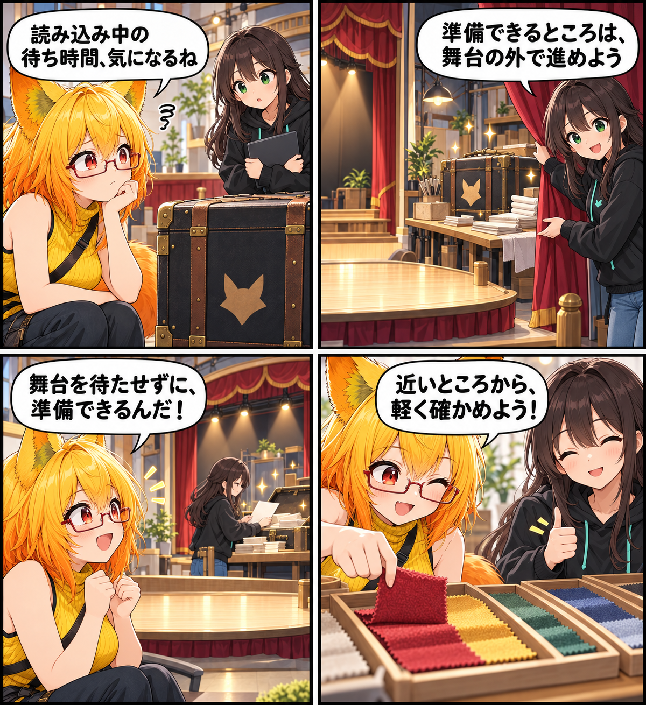

2026.10.25 / Development Log
読み込みの手前を、軽くする日
アバターを読み込むまでの「準備」を見直しました。VABの形式判定、VRM/GLBの読み込み準備、衣装表面の選択処理を整え、Unityのメインスレッドで待つ仕事と一時的な割り当てを減らしています。
今回は development（開発進捗） です。集計期間は2026-10-24 03:00:00 JSTから2026-10-25 02:59:59 JST、参照ブランチはViewerの
main です。集計終了時点のHEADは 95b98c8450c02c819797998c176ea8a99178aed6、期間内コミットは1件でした。未コミット差分は対象期間の実績と確認できないため含めていません。
判定のために、もう一度開かない
VABを探す処理では、すでに読み込んだManifestの形式情報を使って分類するようにしました。分類だけのために同じVABを開き直さず、最初に確認した情報をそのまま活かします。
重い準備は、画面の外で
VRM/GLBの外部モデル読み込みでは、ファイルを読むことと純粋なバイナリ/JSON解析をUnityのメインスレッド外で進めます。一方で、Unityオブジェクトを扱うインポート処理はメインスレッドに残します。安全に分けられる準備を分け、画面を動かす本来の仕事を守るための見直しです。
選ぶときも、近い候補から
デスクトップで衣装表面を選ぶ処理は、候補を近い順に調べる形へ変更しました。候補リストとレイキャスト用バッファは繰り返し使い、クリックごとの一時的な割り当てを抑えています。VRで広いアバター操作用コライダーかを確認する処理も、動的な追加を妨げない範囲でキャッシュします。
4コマの裏話
今回は、舞台を止めずに舞台裏で準備を進める小さな劇にしました。ファイルを読むことと解析を舞台裏へ移し、最後の布見本で近い候補から確かめる流れを表しています。
まとめ
目に見えるボタンを増やす日ではありませんが、読み込みや選択の手前にある反復作業を減らすことで、アバターに向き合う時間を少しでも素直にしていきます。
本日のひとこと
舞台に立つ前の準備ほど、静かに整えておきたい。